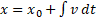

Week 10: Fake Physics (Motion, Acceleration, Gravitation Pull, Bouncing, and Friction) and Constrained Manipulation
Please our course Github file our course Github for the source code.
Constraint Manipulation of 3-level hierarchy
1. Hierarchy Track Target
· Scene:
i. TheWorld: Empty GameObject meant for
1. Organization
2. Hanging TheWorld script
ii. Three-Level-Claw (ok, bad name):
1. Simple three level arm-like structure: Root, Child, and Front
2. Cylinders with a tree inside (to show y-rotations)
iii. FrontTip: tip position of Front (tracked by hierarchy)
iv. LocationTester: for tracking
v.
Node
Orgs: contain the three axis-frame object for
showing the origin’s of the three nodes in the
hierarchy
·
Run and Observe: (in Editor Window)
i. Select LocationTester,
1. drag it around to see Front node pointing at
ii. Select TheWorld
1. Enable/Disable: RotateRoot and RotateChild
a. Observe the corresponding nodes rotate towards LocationTester
2. Adjust: RootDelta and ChildDelta to see the posture change
· Implementation (only works for Up direction, do you know how to generalize this?)
i. SceneNode:
1. New instance variable: mParentXform
a. Records parent’s transform (excluding this node’s transform)
2. OrbitAroundWolrdY():
a. Exhibits this node around world’s up-axis (Vector.up)
3. AlignUpWith( aDir): Aligns the “Y” (up) of this node with aDir
a. Remember: the initial “Y” of this node is not Vector.up, rather, it is the Y of concatenated transforms from the parents.
b. What we want is: a rotation Q, that rotates from parent’s up to aDir
c. Let: Qp, the rotation from initial to parent’s current orientation
d. Now, we want to apply Q _AFTER_ parent’s transform, Qp, as in:
i. Q * Qp
e. HOWEVER, by the time this node wakes up, we can only apply:
i.
Qp * Qa //
where Qa
is the rotation from this node
f. A little linear algebra shows
i. Qa = Qp-Inv * Q * Qp
4. RotateUpTowardsBy( aDir, delta): rotates current node’s up-vector towards aDir, by, delta amount. delta is a percentage (0 means no, 1 means all the way)
a. Again, current node’s up is the concatenated result from its parent. So, we want a rotation Q, that rotates parent’s up towards aDir by delta amount.
b. Rotation Q:
i. Axis of rotation: Cross of Parent’s Up and aDir
ii. Angle: ACos of Dot
c. Once again, apply: Qp-inv * Q * Qp
5. SetAxisFrame(Transform):
a. Use combined transform position and Forward/Up to set the position and orientation
ii. TheWorld: this implementation is not elegant, you should design SceneNode to integrate the functionality
1. New instance variables (WAY too many!): all must be set in the editor
a. All the nodes that will be rotated: TheRoot, TheChild, TheFront
b. Origin of nodes: RootOrg, ChildOrg, FrontOrg
c. Target: TargetPos, FrontTip (tip position of front)
d. Controls:
i. TrackTarget: to track or not
ii. How to track: RotateRoot (RootDelta), RotateChild (ChildDelta)
2. UpdateHierarch()
a. Triggers node hierarchy matrix concatenation, sets all axis frames origins, and, FrontTip position and orientation
3. Update()
a.
Aligns corresponding nodes’ Up with the aDir = (Node-Org to TargetPosition)
2. Track Mouse Click:
· Scene: identical to previous except
i. LocationTester: controlled move to LMB on the ThePlane
ii. ThePlane: Added to layer-8, to be ray cast by LMB
·
Run and Observe: (in Game Window)
i. Click on ThePlane, to move LocationTester and hierarchy points to the LocationTester
1. Make sure to look at the check boxes in TheWorld
· Implementation: only change is how LocationTester is manipulated—by LMB on ThePlane
i. MainController_MouseSupport:
1. mouse click to cast ray to ThePlane
2. sets TheWorld.TargetPos
3. Drag Hierarchy:
· Scene: identical to previous except
i. LocationTester: removed
ii. FrontTip: becomes the tracked
·
Run and Observe: (in Editor Window)
i. Select and drag FrontTip around
1. make sure to look at the check boxes in TheWorld
· Implementation:
i. TheWorld: replace TargetPos with FrontTip, that’s all
ii. Do not set FrontTip position (let user drag this around).
iii. Only interesting part:
1.
At the end of Update(),
constraints FrontTip
position
4. Track Any Mouse Click:
· Scene: identical to previous except
i. LocationTester: removed
ii. FrontTip: becomes the tracked (this is under the control of mouse click)
·
Run and Observe: (in Game Window)
i. Mouse click to move the FrontTip position to where the mouse clicked (in 3D space)
1. make sure to look at the check boxes in TheWorld
· Implementation: MainController_MouseSupport.cs (Source/UISupport/),
i. mPointToTrack: is mFrontTip
ii.
mNodeOrg: is mFrontOrg
iii. the UpdatePointToTrack() function,
1. Ray: is the ray (in World Space) from camera position to the current hit point (in WC)
2. mPointToTrack (or mFrontTip) is the projection of mNodeOrg onto the Ray
iv.
TheWorld: attempt to
track FrontTip
Not done: collision with the plane and stops the crane from penetrating the plane
· At the end of the TheWorld.Update()
· Adjust FrontTip by …
i. Intersection FrontOrg.Up with ThePlane
ii. Move FrontTip to the intersection position
· Do you know how to implement this?
Fake Physics:
1. Gravitational Pull
· FreeFallSphere: component to look at SimpleMotionPhysics
i. Literally three lines: simple “accumulating” (or integrating) the quantities. This is referred to as Euler’s Integration, recall
 where x is position, and v is velocity
 Taking
integral from both side
Taking
integral from both side
 Assuming v is constant during the integral
interval
Assuming v is constant during the integral
interval
ii. A very simple approximation of the integral, in this case, the physical effects. For this simple case, the approximated results is pretty good.
iii. The three lines of code: position, velocity, and, acceleration (remember Calc-1)?
ii. Try:
1. Run the game, and go to the Editor Window (NOT the Game window)
2. Select the FreeFallSphere, set its height to something interesting like 80, observe the effect of downward speed increase (or, accelerate towards the floor, or, gravitational pull).
· Launcher: simple hierarchy to change the pivot of the cylinder to its bottom (remember this?)
i. Script: LaunchSystem
1. Sets up more interesting initial condition for the FreeFallSphere
a. Direction of initial velocity: transform.up
b. Speed of initial velocity: transform.localScale.y (with a simple scale)
2. Also sets gravitation
ii. Now go launch projectiles! (Again from the Editor Window), select Launcher, click on Launch to launch
2. Continuous Launch
· Simple modification from previous
· FreeFallSphere: kills itself when Y is less than zero
· LaunchSystem: when launch is true, simply continuously create FreeFallSphere. Now, can examine the entire trajectory
· Computer graphics is cool eh?
3. Approximating Bouncing
· This is VERY BAD approximation, but, individually, things looks “ok”
· SimpleMotionPhysics:
i. CollideWithObject(): New function fake intersection with “an object”
1. Simply check the y position to make sure the sphere is “above” 0
2. NOTE: moving the position to above 0 (arbitrarily to y=0.01f) to avoid penetration of the floor
ii. If collision, simply reflect the vector across the collider’s normal
· Run (in the Editor Window)
i. Select the Launcher
ii. Click on the “Launch” check box for a short while to see burst of projectiles
iii. Observe these bounce like rabbits, and notice errors (different trajectory, results of our arbitrary 0.01f setting)
4. Elasticity and Friction
· NOTE: HUGE Limitations
i. This is a VERY *VERY* crude approximation of actual physics
ii. There is no logic support to stop the ball from bouncing or moving, simply not attempted here
· SimpleMotionPhyscis: three more variables
i. TimeAlive: determines when to destroy the object (Since we do not know how to stop, let’s just delete it)
ii. Elasticity: how bouncy is the collision (0-not at all, like rubber, 1-perfect collision no loss of energy)
1. Only affects how “high” after the collision (only affects the normal vector component of the velocity)
iii. Friction: attempt to model frictional force at the collision point
1. Only affects the component of the Velocity that is perpendicular to the normal
iv. If collision occurs, decompose the Velocity into components in the directions align with and perpendicular to n, and, scale those components accordingly.
· LaunchSystem: sets Elasticity and Friction when launch